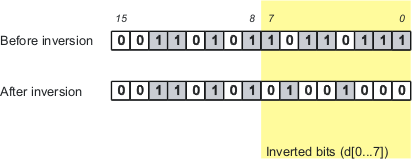
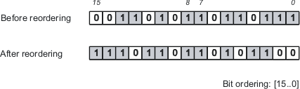

Data scrambling
Data scrambling is the conversion of data bits to account for inverse logic and different arrangements of the bits in a data word.
Bit inversion
Bit inversion is used to compensates for devices with inverse logic, that is, devices where logical 0 is represented by physical 1 and vice versa.
It is controlled by a bit inversion table with two columns: the first indicates which bits to invert, the second is a flag that controls whether inversion happens: If it evaluates to 1, the specified bits are inverted, if it evaluates to 0, they are not.
The bit inversion table is described in Device architecture file syntax.
Bit ordering
Bit ordering rearranges the bits in a data word. It is most commonly used to compensate for differences in the position of the most significant bit (that is, to mirror the order of the bits in the data word) but can also be used to rearrange bits in more complex ways.
Bit ordering is controlled by a bit ordering table with two columns: the first specifies a new order of the bits, the second is a flag that controls which bit order is used: If an expression evaluates to 1, the corresponding bit order is used. Entries in the bit ordering table must always be made in pairs; the expression in the second row must always be the logical inversion of that in the first row of the pair.
The bit ordering table is described in Device architecture file syntax.
Examples
Bit inversion
This is a sample bit inversion table from the Device architecture file:
:bitInversion:
{
:name: "bit inversion"
:table:
{
:format:
{ :bit: :expression: }
{ d[0..7] x0 }
}
}Given this table, bit inversion would be applied to a sample data word like this:

Only the bits specified in the table (bits 0 through 7) are inverted. (This assumes that x0 has the value 1; otherwise there would be no inversion at all.)
Bit ordering
This is a sample bit ordering table from the Device architecture file:
:bitOrdering:
{
:name: "bit ordering"
:table:
{
:format:
{ :bit: :expression: }
{ d[15..0] "not x1" }
{ d[0..15] x1 }
}
}This table inverts the order of the bits when x1 is 0 (and therefore "not x1" is 1):

If x1 is 1 (making "not x1" 0) the bits are left as is.
Functional changes
- Introduced before SmarTest 6.3.2